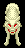
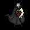
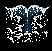
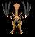

| Back to the ZooKeeper. |
| To the Zoo 22 V. |
| To the Zoo 24 X. |
| The Zoo 23 W |
 |
| Winter Wolf. Casts Icestorm. Tan for armor (needed for Duke quest). Found in Aleria. Cobrahn Wolf. Found in the forests. |
 |
| Wraith. Found under Vampire Lair with Frore Minotaur. |
 |
| Warden. Found on Nork -10. |
 |
| Whale. Found in the waters of Nork, Frore and Aleria. |
| WitchDoctor. Casts Darkness. Drops Staff when killed. Found Northwest of GoblinKing Lair. 18K+ XP. |
 |
| WolfSpider. Poisons and bites. Found in Aleria. |
 |
| Wolf. Found in Nork and Frore. |
 |
| Wolfbat. Found on the forest floor in Cobrahn. |